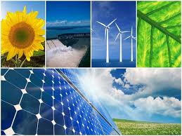

¿Qué son las energías limpias?
Las enerías limpias son aquellas que se obtienen de fuentes de fuentes renovables y no generan contaminación durante su uso. Algunas de estas fuentes incluyen la energía solar, eólica, hidroelectrica y la energía generada a partir del Hidrogeno Verde.
Beneficios de las Energías Limpias
- 💨 Reducción de Emisiones de CO₂
- ☁ Disminución de las contaminación Armosférica
- ☀ Disponibilidad de recursos inagotablescomo el sol
- 🌩 Impulso al desarrollo de Comunidades Energéticas